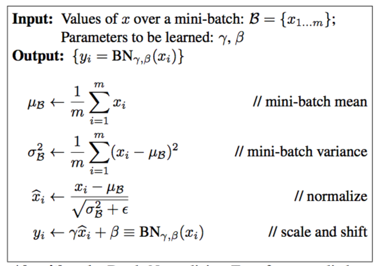
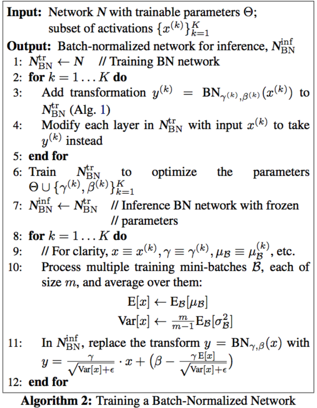

论文及背景
Batch Normalization: Accelerating Deep Network Training by Reducing Internal Covariate Shift
这篇论文提出了深度学习里加速训练的一个策略：Batch Normalization
Motivation
Distribution of each layer’s inputs changes during training. This slows down the training by requiring lower learning rates and careful parameter initialization
— Internal Covariate Shift Phenomenon
在深度学习训练过程中，每一层输入的分布是变化的，很小的参数改变可能引发网络剧烈变动，而且随着网络深度的增加这种情况会更严重。为了防止网络剧烈波动，学习率就需要设置的很小，导致训练会很慢。同时，参数的初始设置也需要很小心。
而且如果参数变动厉害，对于一些非线性变换，会有gradient vanish的问题。如：
其中，$g$是sigmoid。如果$W,b$变化剧烈，$u=Wx+b$的值也会变动很大，很容易到达sigmoid两边的区域，梯度会很小。
解决方法
出发点
神经网络可看出多个子网络的组合，比如计算：
这个网络可看成2个子网络$F_1,F_2$.
对于每个网络$F$，更新步骤为：
其中$x$为当前子网络的输入，之前网络的输出。
正如如果训练集和测试集样本分布一致的话，模型的Generalization会很好一样，如果每个子网络的输入分布保持一致，训练速度会加快。(感觉有点牵强)
一般白化的问题
要想得到一致的分布，一下子想到的做法是在每一层输出的时候白化一下（标准化）。比如，有个网络计算：
不考虑方差的话，标准化过程是：$x = x - E(x)$。
如果忽略$E(x)$与$b$之间的关系，更新$b$时有：$b = b + \Delta b$，那么
其实是没有变化的，那么最后loss也不会变，最后$b$会变成正无穷。
出现上面情况的原因是，这个计算过程忽略了大量关联关系：如期望与参数之间的关系，样本与样本之间的关系。
一般的，如果把白话抽象表示如下：
那么$x$ 与$X$是有关系的，那么在计算梯度时不仅$\frac{\partial loss}{\partial x}$要考虑，同时$\frac{\partial loss}{\partial X}$也要考虑。这时计算代价会很高，需要计算：
为此需要一种新的白化方法
论文的方法
为了解决一般白化的问题，作者做了两个简化：
- 将每一层的每个特征看作独立
- 在一个mini-batch上白化，而不是在整个数据集上白化
具体来说，对于一个输入$x = (x^{(1)},\cdots,x^{(d)})$，白化过程是：
为了保证不改变模型的表达能力，会加入一个线性变化：
当$\gamma^{(k)} = \sqrt{Var[x^{(k)}]}$，$\beta^{(k)} = E[x^{(k)}]$,事实上是恢复了原来的分布。
过程如下：

那么问题来了，既然分布恢复了，那又如何保证每个子网络输入分布保持一致？。
这其实要绕过弯，如果我们把式(1)和后面网络放在一起当作一个子网络，那么对于这个子网络来说输入的分布就是标准正态分布
在inference阶段，确定$E[x]$和$Var[x]$的方法是取多个训练集batch，求出相应的均值和方差，然后用无偏估计：
具体训练步骤如下：

另外，batchnorm能够使得网络训练对参数大小不敏感。对于：
也就是说即使参数变大了，使用BN后，backward的时候实际上是没有影响的
并且
权值变大的时候，相应的梯度会变小，可以使得网络训练更加稳定。